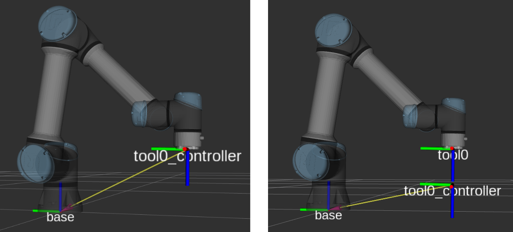

Utility Controllers
These controllers provide access to UR robot-specific features that complement the motion control modes. They are not motion controllers themselves but provide status information, safety features, and special robot modes.
For position and velocity based control, see Position and Velocity Control.
For force and torque based control, see Force and Torque Control.
joint_state_broadcaster
Type: joint_state_broadcaster/JointStateBroadcaster
Publishes all joints’ positions, velocities, and motor currents as sensor_msgs/JointState on the joint_states topic. This broadcaster is read-only and can run alongside any other controller.
Note
The effort field contains the currents reported by the joints and not the actual efforts in a physical sense.
speed_scaling_state_broadcaster
Type: ur_controllers/SpeedScalingStateBroadcaster
Publishes the current actual execution speed as reported by the robot. Values are floating points between 0 and 1. This broadcaster is read-only and can run alongside any other controller.
The speed scaling value reflects the combined effect of the speed slider on the teach pendant and
any controller-imposed speed limits. It is used by the joint_trajectory_controller to scale
trajectory execution on the ROS PC. For the passthrough_trajectory_controller and the
motion_primitive_forward_controller, speed scaling is handled directly by the robot controller
since it performs the interpolation in these modes.
io_and_status_controller
Type: ur_controllers/GPIOController
Allows setting I/O ports, controlling some UR-specific functionality, and publishes status information about the robot. This controller is always active.
Key services include:
~/set_io: Set digital output pins.~/set_payload: Change the robot’s payload on-the-fly.~/set_speed_slider: Set the speed slider value.~/zero_ftsensor: Zero the force/torque sensor.~/resend_robot_program: Restart the external control program (headless mode).
See the io_and_status_controller documentation for the full list of topics and services.
tool_contact_controller
Type: ur_controllers/ToolContactController
Enables the robot’s tool contact detection. When tool contact is detected, the robot stops all motion and retracts to where it first sensed the contact. This is useful for probing, surface detection, and safe approach applications.
The controller works with the joint_trajectory_controller and the
passthrough_trajectory_controller.
The controller provides an action interface:
~/detect_tool_contact [ur_msgs/action/ToolContact]
$ ros2 action send_goal /tool_contact_controller/detect_tool_contact \
ur_msgs/action/ToolContact
See the tool_contact_controller documentation for full details.
tcp_pose_broadcaster
Type: pose_broadcaster/PoseBroadcaster
Publishes the robot’s TCP pose. This broadcaster is read-only and can run alongside any other controller.
The robot’s TCP pose is published both as a geometry_msgs/PoseStamped on the tcp_pose_broadcaster/pose topic and as a
tf2 transform with the frame name tool0_controller with base as a
parent.
Thus, the transformation from base to tool0_controller doesn’t use the URDF model and
forward kinematics in ROS, but instead directly uses the robot’s internal kinematics and sensors
(which will always use the robot’s calibration).
Note
When setting a tool on the robot’s teach pendant, this will affect the tcp pose as published by this controller, as the robot will take the tool’s geometry into account when calculating the TCP pose.
Setting up the URDF with the robot’s calibration will make the tool0
and tool0_controller frames align exactly given no tool is setup on the robot.
All frames mentioned will be prefixed with the robot’s tf_prefix if it is set. It has been
omitted here for readability.

Fig. 3 The tool0_controller frame is published with base as parent directly, while
tool0 is attached to the URDF model chain. When a TCP is setup on the robot, the
tool0_controller frame will take that into account (as on the right, where the tool has a
z-offset of 110 mm).
ur_configuration_controller
Type: ur_controllers/URConfigurationController
Provides access to UR-specific robot configuration data. This controller is always active.